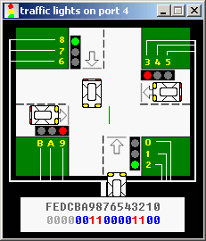
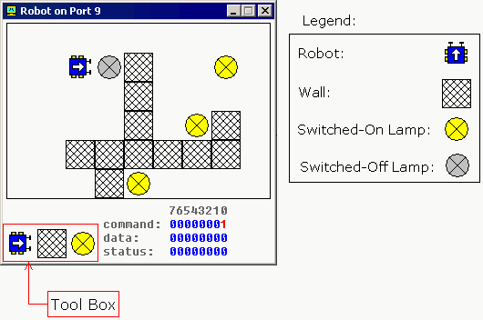

8086 assembler tutorial for beginners (part 12)
Controlling External Devices
There are 7 devices attached to the emulator: traffic lights, stepper-motor, LED display, thermometer, printer,
robot and simple test device. You can view devices when you click "Virtual Devices" menu of the emulator.
For technical information refer to I/O ports section of emu8086
reference.
In general, it is possible to use any x86 family CPU to control all kind of devices,
the difference maybe in base I/O port number, this can be altered using some tricky
electronic equipment. Usually the ".bin" file is written into the Read Only
Memory (ROM) chip, the system reads program from that chip, loads it in RAM module
and runs the program. This principle is used for many modern devices such
as micro-wave ovens and etc...
Traffic Lights

Usually to control the traffic lights an array (table) of values is used. In
certain periods of time the value is read from the array and sent to a port.
For example:
; controlling external device with 8086 microprocessor.
; realistic test for c:\emu8086\devices\Traffic_Lights.exe
#start=Traffic_Lights.exe#
name "traffic"
mov ax, all_red
out 4, ax
mov si, offset situation
next:
mov ax, [si]
out 4, ax
; wait 5 seconds (5 million microseconds)
mov cx, 4Ch ; 004C4B40h = 5,000,000
mov dx, 4B40h
mov ah, 86h
int 15h
add si, 2 ; next situation
cmp si, sit_end
jb next
mov si, offset situation
jmp next
; FEDC_BA98_7654_3210
situation dw 0000_0011_0000_1100b
s1 dw 0000_0110_1001_1010b
s2 dw 0000_1000_0110_0001b
s3 dw 0000_1000_0110_0001b
s4 dw 0000_0100_1101_0011b
sit_end = $
all_red equ 0000_0010_0100_1001b
Stepper-Motor

The motor can be half stepped by turning on pair of
magnets, followed by a single and so on.
The motor can be full stepped by turning on pair of magnets, followed
by another pair of magnets and in the end followed by a single magnet and so on.
The best way to make full step is to make two half steps.
Half step is equal to 11.25 degrees.
Full step is equal to 22.5 degrees.
The motor can be turned both clock-wise and counter-clock-wise.
See stepper_motor.asm
in c:\emu8086\examples\
See also I/O ports section of emu8086
reference.
Robot

Complete list of robot instruction set is given in
I/O ports section of emu8086
reference.
To control the robot a complex algorithm should be used to achieve
maximum efficiency. The simplest, yet very inefficient, is random moving
algorithm, see robot.asm in c:\emu8086\examples\
It is also possible to use a data table (just like for Traffic Lights), this
can be good if robot always works in the same surroundings.